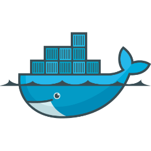

Docker
Tobias Waaler og Stian Mathiassen
The Dream!
docker run myapp
Virtualization is NOT the point
Image and container
Image:
A snapshot of a disk image. Can be created by commiting a container.
Container
A program running in docker, which uses an image as a base image. Each container start from scratch from the base image.
Lifecycle in Docker
Get a base image
docker pull ubuntu:latest
Pulls an image from index.docker.io
List all images
docker images
REPOSITORY TAG IMAGE ID CREATED VIRTUAL SIZE
ubuntu latest 9cd978db300e 7 weeks ago 204.4 MB
Image layers

Start a container
docker run ubuntu echo "Hello World"Hello WorldList containers
docker ps --all
CONTAINER ID IMAGE COMMAND CREATED STATUS ...
2529384fabd4 ubuntu:latest echo Hello World 8 minutes ago Exit 0 ...
A useful container
docker run --interactive --tty ubuntu /bin/bash
root@a9f2bd405f9e:/# echo "Hello World" > /somefile.txt
root@a9f2bd405f9e:/# exit
Container has died
docker ps --all
CONTAINER ID IMAGE COMMAND CREATED STATUS ...
a9f2bd405f9e ubuntu:latest /bin/bash 3 minutes ago Exit 0 ...
2529384fabd4 ubuntu:latest echo Hello World 20 minutes ago Exit 0 ...
Restart a container
Will re-run the same command. Will re-use same disk.
docker start --attach --interactive a9f2bd405f9e
root@a9f2bd405f9e:/# echo "Hello World" > /anotherfile.txt
root@a9f2bd405f9e:/# exit
Diff changes to container
Will show changes from base image and the container
docker diff a9f2bd405f9e
A /.bash_history
A /anotherfile.txt
C /dev
C /dev/console
C /dev/core
C /dev/fd
C /dev/ptmx
C /dev/stderr
C /dev/stdin
C /dev/stdout
A /somefile.txt
Create a new image
Base the new image on a container. Will create a new layer on top of the base image
docker commit a9f2bd405f9e myimage:mytag
dbf0e2a6421dfcb3d2194c5e2c3daf2132bd0c172cdaaa3ab90f27d5a0273ba8
docker images --tree
└─511136ea3c5a Virtual Size: 0 B
└─6170bb7b0ad1 Virtual Size: 0 B
└─9cd978db300e Virtual Size: 204.4 MB Tags: ubuntu:latest
└─dbf0e2a6421d Virtual Size: 204.4 MB Tags: myimage:mytag
Setup for assignment
- We are using Vagrant for the assignments
- Really just a virtual machine in VirtualBox
vagrant upStarts your virtual machinevagrant destroyResets your virtual machinevagrant sshLog in to the virtual machine/vagrantinside the virtual machine is a shared folder
Assignment #1
- Run
echo "Hello world"in a container based on the Ubuntu image - Run an interactive bash in a container
- Install node.js (
nodejs) in a container (using interactive bash) apt-get updateUpdates list of available softwareapt-get installInstall software- Create an image called
assig1with node.js installed - Try to run
nodejs --versionusing your new image
Summary
docker run --interactive --tty ubuntu /bin/bash- (do stuff in container)
docker commit CONTAINER_ID
Dockerfile
The Recipe
Dockerfile
FROM ubuntu
RUN apt-get update
RUN apt-get install -y nodejs npm
Each RUN-command creates a new layer. Layers are re-used
Build image
docker build --tag="ubuntu-nodejs" .
$> docker images
REPOSITORY TAG IMAGE ID CREATED VIRTUAL SIZE
ubuntu-nodejs latest 34b580498f7b 2 minutes ago 248.2 MB
Assignment #2
Do the following using a Dockerfile ...
- Create an image with
nodejsandnpminstalled - Tag your image as
ubuntu-nodejs - Create a container based on that image, and run
nodejs --versionto check that it is installed correctly
Dockerfiles pt. 2
ADD, ENTRYPOINT, USER, WORKDIR and EXPOSE
ADD
Copy a file from the host to the image
FROM ubuntu-nodejs
ADD ./src /var/apps/nodejs/
Same as running docker cp
USER
Run command as user
FROM ubuntu-nodejs
ADD ./src /var/apps/nodejs/
USER daemon
ENTRYPOINT
Command to run when starting the container
FROM ubuntu-nodejs
ADD ./src /var/apps/nodejs/
USER daemon
ENTRYPOINT ["nodejs", "/var/apps/nodejs/index.js"]
WORKDIR
Change current working directory
FROM ubuntu-nodejs
WORKDIR /
RUN rm -fr *
EXPOSE
Specify which ports the container should make available
FROM ubuntu-nodejs
ADD ./src /var/apps/nodejs/
USER daemon
ENTRYPOINT ["nodejs", "/var/apps/nodejs/index.js"]
EXPOSE 8888
Publish ports
Ports are not automatically published
docker run -p 8888:8888 ubuntu-nodejsMaps ports 8888 on host machine to 8888 on container
Assignment #3
Based on the ubuntu-nodejs image created in Assignment #2:
- Add
/vagrant/app/srcto/var/apps/nodejsinside the image - Run
npm installin/var/apps/nodejsdirectory in the container - The application is started with
nodejs /var/apps/nodejs/index.js - The application is running on port 8888
- Start the container with the port mapped to port 8888 on the host machine
- Check that the application is running on http://localhost:8888
Volumes
VOLUME
Add a data volume
FROM ubuntu:14.04
...
ENTRYPOINT mongod
VOLUME /data/db
Mounting volumes
docker run --volume /data:/data/db ubuntu-mongoLinking containers
Container #1: MongoDB
FROM ubuntu:14.04
RUN apt-key adv --keyserver hkp://keyserver.ubuntu.com:80 --recv 7F0CEB10
RUN echo 'deb http://downloads-distro.mongodb.org/repo/ubuntu-upstart dist 10gen' | sudo tee /etc/apt/sources.list.d/mongodb.list
RUN apt-get update
RUN apt-get --yes install mongodb-org
VOLUME /data/db
EXPOSE 27017
ENTRYPOINT mongod
$ docker build --tag ubuntu-mongo /path/to/mongodb/Dockerfile$ docker run --volume /data:/data/db
--name mongodb
--detach ubuntu-mongoMongoDB is running!
$ docker ps
CONTAINER ID IMAGE COMMAND PORTS NAMES
43a1d9173209 mongo:latest /bin/sh -c mongod /b 27017/tcp mongodb
Using --link to get environment properties
$ docker run -t -i --link="mongodb:mongodb" ubuntu bash
root@541474c8ccd4:/# env
...
MONGODB_PORT_27017_TCP=tcp://172.17.0.30:27017
MONGODB_PORT=tcp://172.17.0.30:27017
MONGODB_PORT_27017_TCP_PORT=27017
MONGODB_PORT_27017_TCP_PROTO=tcp
MONGODB_PORT_27017_TCP_ADDR=172.17.0.30
...
Using the environment variables
In our node app:
var mongoPort = process.env.MONGODB_PORT_27017_TCP_PORT;
var ip = process.env.MONGODB_PORT_27017_TCP_ADDR;
var connectionString = 'mongodb://' + ip + ':' + mongoPort + '/local';
mongoose.connect(connectionString);
Container #2: our NodeJS app
FROM ubuntu:14.04
RUN apt-get update
RUN apt-get --yes install nodejs npm
ADD ./src /var/apps/nodejs/
RUN cd /var/apps/nodejs/; npm install
EXPOSE 8888
CMD nodejs /var/apps/nodejs/index.js
$ docker build --tag ubuntu-nodejs /path/to/nodejs/Dockerfile$ docker run --publish 8888:8888
--link="mongodb:mongodb"
--detach ubuntu-nodejsOur Nodejs app is now connected to MongoDB
$ docker ps
IMAGE COMMAND PORTS NAMES
ubuntu-nodejs:latest /bin/sh -c 'nodejs / 0.0.0.0:8888->8888/tcp lonely_goldstine
mongo:latest /bin/sh -c mongod /b 27017/tcp drunk_ptolemy/mongodb,lonely_goldstine/mongodb,mongodb
Assignment #4
-
Build an image with MongoDB running
(Create the new Dockerfile in a seperate directory. Remember to
EXPOSEthe port) -
Run a container based on the newly created Mongod-image
(remember to give it a
--name) -
Start the Nodejs application with the
--linkoption - Verify that the application is connected to MongoDB by visiting http://localhost:8888
Bonus assignment
Build images that you find useful!
Building on Docker
- Fig - Container management
- Kubernetes - PaaS by Google
- Dokku - Mini-PaaS in 100 lines of bash
- Deis - PaaS
- Flynn - PaaS